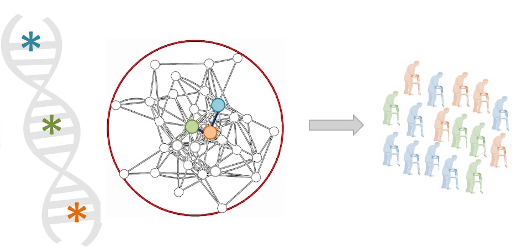

Detecting disease-causing variation across the allele frequency spectrum
Variants across the allele frequency spectrum influence different diseases differently. De novo variants are major drivers of rare sporadic diseases (e.g., neurodevelopmental diseases, congenital heart defects) as well as common ones (e.g., autism and epilepsy). However, their extreme sparsity demands highly sensitive statistical tools and makes it challenging to identify causal mechanism. In complex diseases, rare germline variants contribute through multiple genes and are too sparse to implicate pathways individually. In contrast, common non-coding variants explain a substantial proportion of heritability but are diffused across the non-coding genome and rarely point directly to causal mechanisms. These challenges highlight the need for distinct context-aware computational frameworks tailored to each variant class. One area of my interest is to develop appropriate statistical and computational methods for each variant class to enhance power for gene and pathway discovery, refine mechanistic hypotheses, and guide follow-up experiment design.